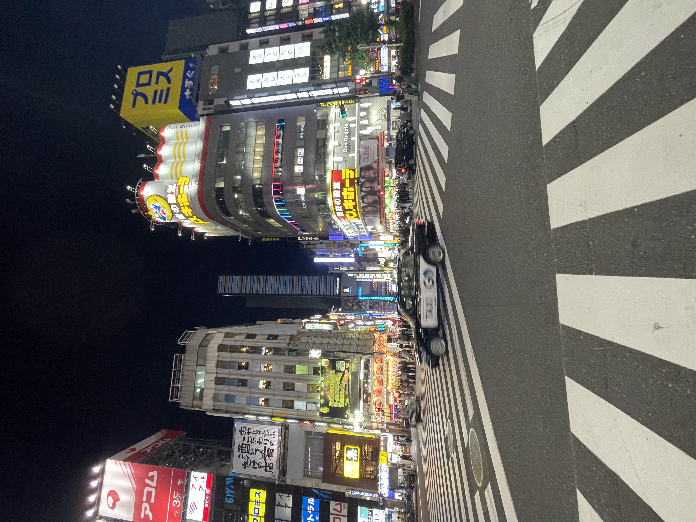
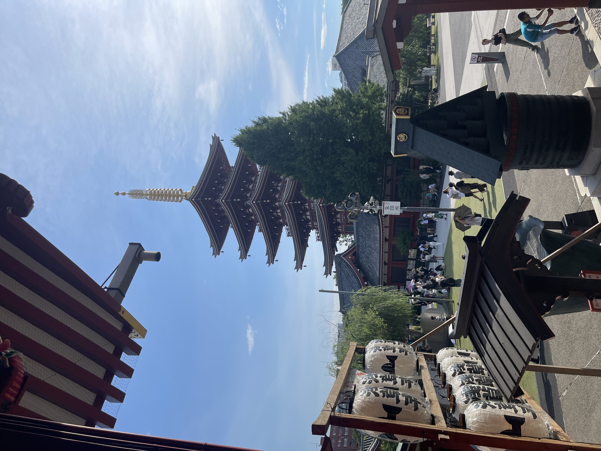
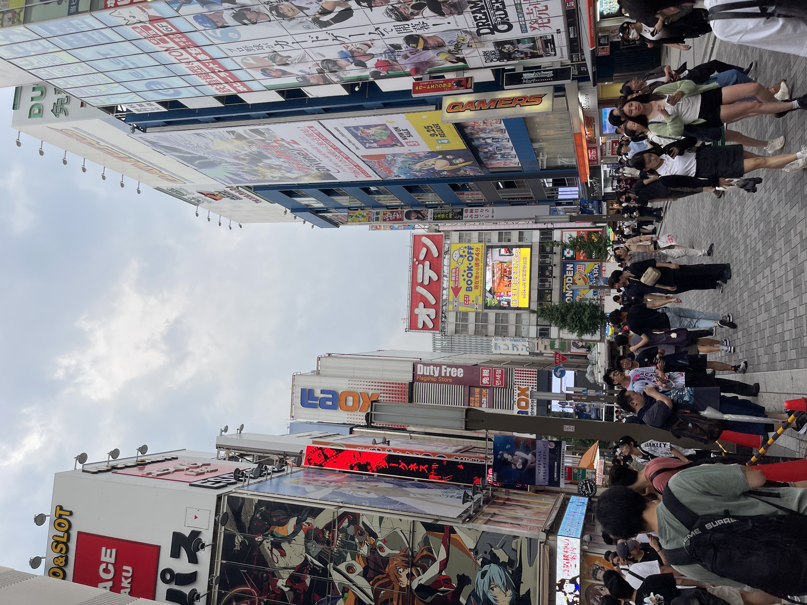
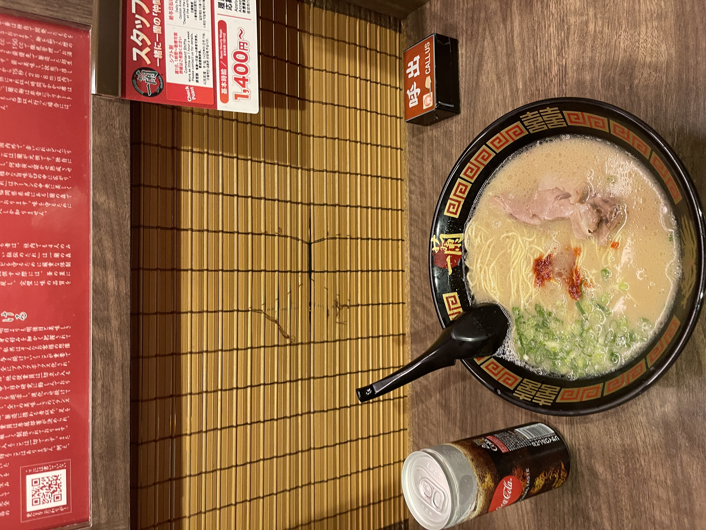
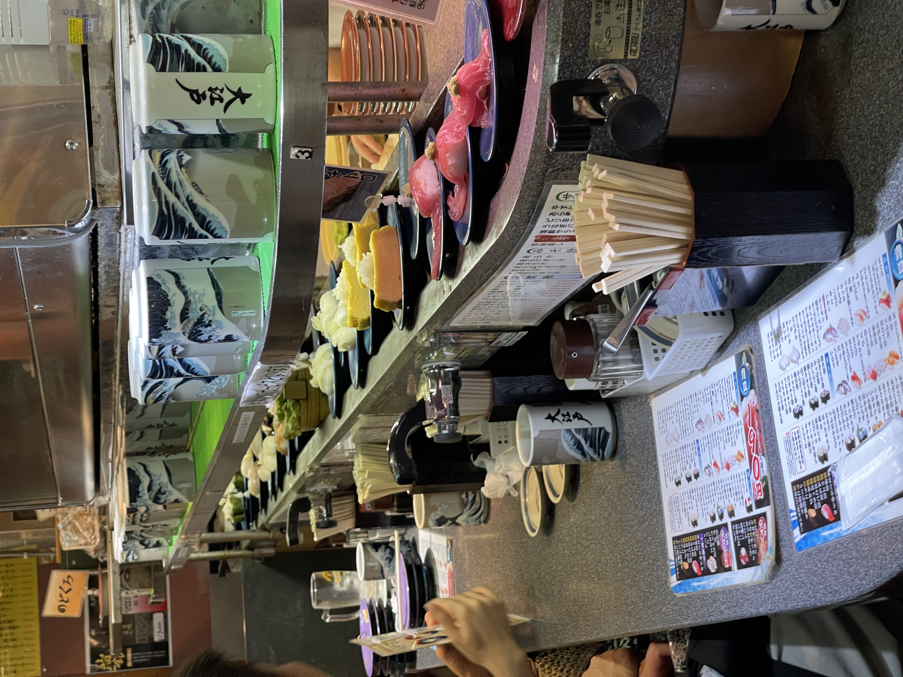

Photo Gallery
Each photo in this gallery reflects a memory: the sights, the flavors, and the feeling of being fully immersed in Tokyo's magic.

Shinjuku Crossing

Asakusa Temple

Akihabara Anime Town

Famous Ichiran Ramen

Revolving Sushi in Ueno

Famous Tokyo Vending Machines